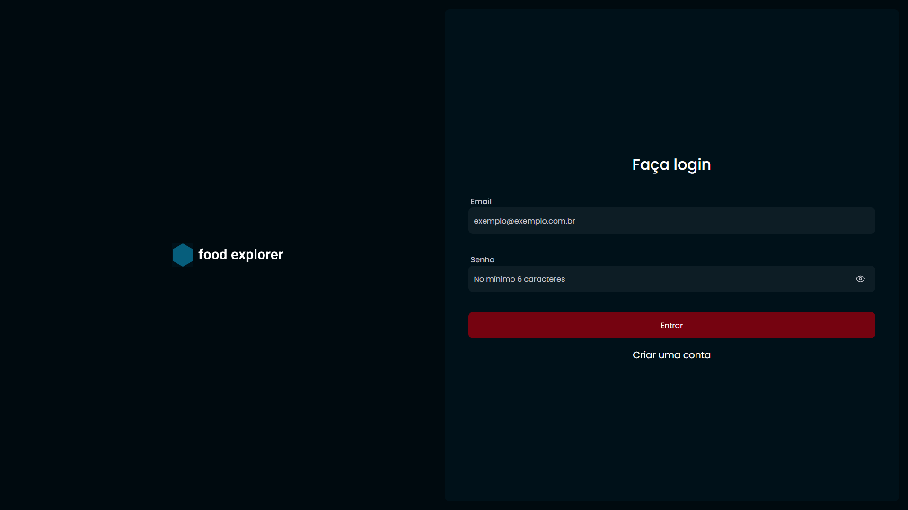
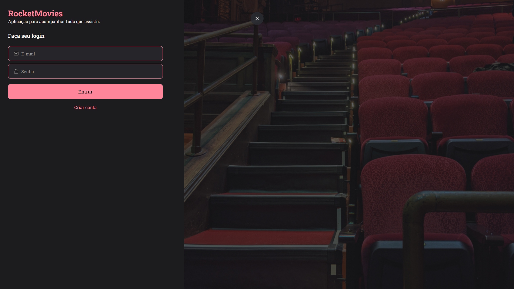
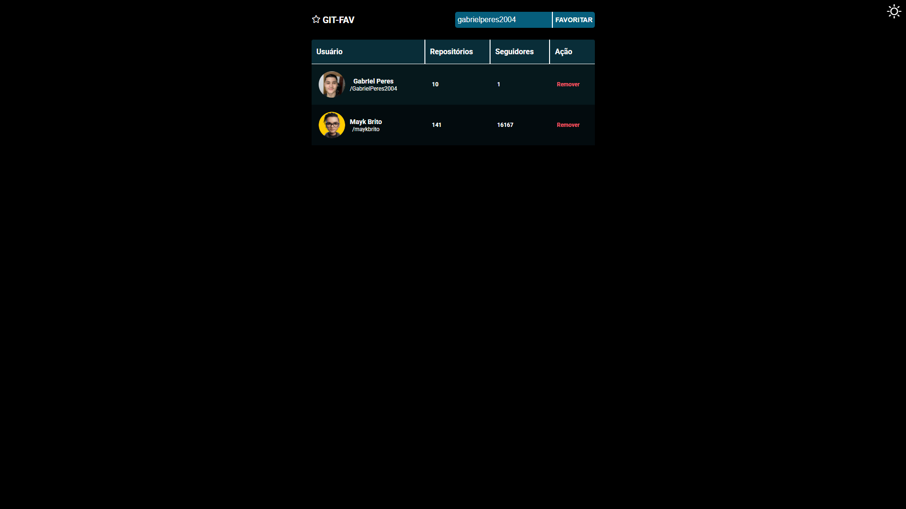

Olá, me chamo Gabriel Peres e sou
Desenvolvedor Fullstack
Sobre mim
Sou Gabriel Peres, estudante de Análise e Desenvolvimento de Sistemas, com foco em desenvolvimento
front-end. Tenho experiência com React.js, Vite e Styled Components, criando interfaces modernas,
rápidas e responsivas. Também utilizo o Figma para prototipar telas e oferecer uma boa experiência para
o usuário.
Atualmente, estou me especializando em front-end e aprendendo Next.js para aprimorar minhas habilidades.
Além disso, tenho experiência com back-end utilizando Node.js e Express, onde desenvolvo APIs RESTful e
faço integrações entre sistemas, o que me permite entender melhor todo o fluxo de uma aplicação web.
Estou em busca de uma oportunidade de estágio ou vaga júnior, onde eu possa aplicar o que venho
aprendendo, evoluir com a prática e contribuir para projetos inovadores enquanto continuo meu
desenvolvimento profissional.
Formação academica
Cursando Análise e Desenvolvimento de Sistemas
Instituição: Toledo Prudente Centro Universitário.
Período: 2025 - Previsão de conclusão: 2027.
Cursos complementares
Rocketseat Explorer – Formação Full Stack
Carga horária: 100h
Habilidades Adquiridas:
HTML · CSS · JavaScript · React · Node.js · Styled Components ·
Express · Git · GitHub (básico)
Minhas Habilidades
 TypeScript
TypeScript
 Tailwind
Tailwind
Meus projetos
Food Explorer
Food Explorer é uma aplicação web de cardápio digital onde usuários podem visualizar pratos, fazer pedidos e o administrador pode gerenciar os itens disponíveis no menu.
Link do GithubRocket Movies
O Rocket Movies é uma aplicação que permite aos usuários cadastrar, avaliar e comentar filmes. Com ela, é possível criar notas sobre os filmes, adicionar tags e organizar seus favoritos. A aplicação também conta com sistema de login e permite que cada usuário gerencie seus próprios filmes de forma simples e prática.
Link do GithubGit Favorites
O Git Favorites é uma aplicação que permite buscar perfis de usuários no GitHub e salvá-los em uma lista de favoritos. É possível adicionar e remover usuários, além de visualizar informações como repositórios públicos, seguidores e outros dados do perfil. Todos os dados ficam salvos no navegador utilizando o localStorage.
Link do GithubContato
Número: (32) 999405614
E-mail: Gperes020@gmail.com